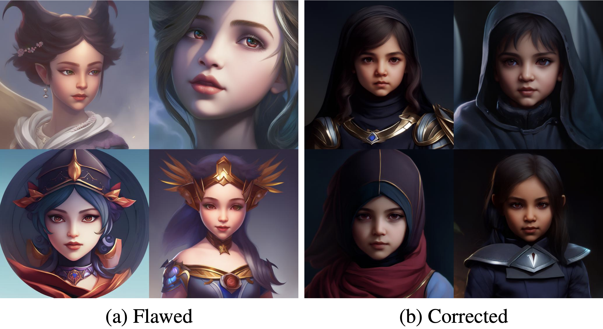
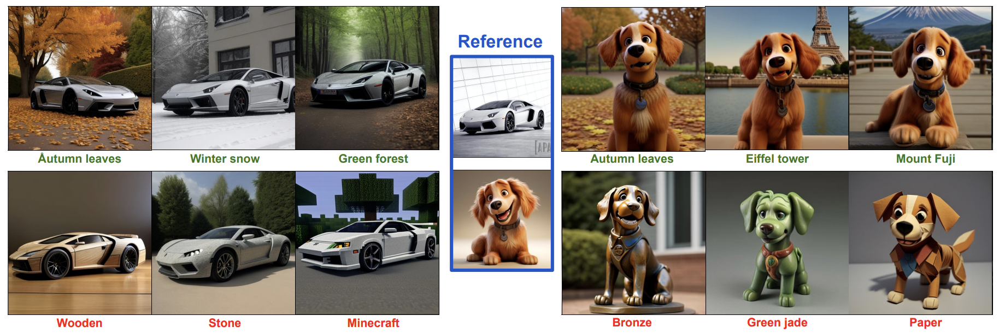
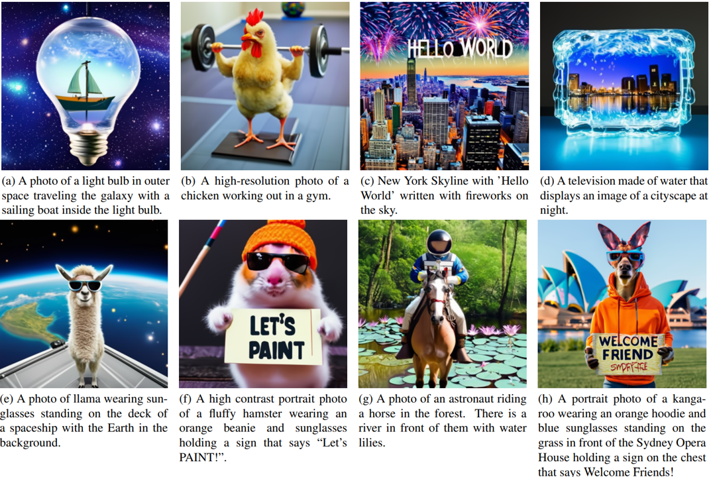

About
I am a Principal Research Scientist at Canva on Efficient AI (Image/Video/LLMs). My goal is making Generative AI more efficient and accessible, for both inference and training.
Prior to that I worked at Bytedance as a Senior Staff Manager, managing a team of 10+
people on AIGC foundation model development and applications. Before that I also worked at Meta shortly on video advertisement products.
I got my Ph.D degree from Computer Science department, UNC Chapel Hill, advised by Dr. Marc Niethammer; I obtained my bachelor degree in Electrical Engineering from Tsinghua University.
My past works spans across various aspect of generative models, including:
News
- Hiring! I am hiring people interested in efficient AI (distillation, quantlization, efficient architecture design, training efficiency improvement etc) for image/video/LLM models in China. Please feel free to contact me if you are interested!
Selected Publications
-
Helios: Real Real-Time Long Video Generation Model. arXiv, 2026.
A 14B real-time long video generation model capable of generating video at 19.5 FPS on a single H100.
-
FSVideo: Fast Speed Video Diffusion Model in a Highly-Compressed Latent Space. arXiv, 2026.
A 28B video generation model achieving high quality, 720P video generation while being 42.3× faster than WAN 14B video models.
-
IP-Prompter: Training-Free Theme-Specific Image Generation via Dynamic Visual Prompting. SIGGRAPH, 2025.
Training-free personalization method achiving state-of-the-art character identity preserving, style consistency and text alignment results.
-
SDXL-Lightning: Progressive Adversarial Diffusion Distillation. arXiv, 2024.
Industry-standard few-step SDXL acceleration method.
-
AnimateDiff-Lightning: Cross-Model Diffusion Distillation. arXiv, 2024.
SOTA few-step video generation for animatediff; >60 million downloads on Huggingface.
-

MVDream: Multi-view Diffusion for 3D Generation. ICLR, 2024.
First method to solve Janus problem for 3D generation.
-

MagicPose: Realistic Human Poses and Facial Expressions Retargeting with Identity-aware Diffusion. ICML, 2024.
High performance pose and expression retargeting.
-

Common Diffusion Noise Schedules and Sample Steps are Flawed. WACV, 2024.
Zero-terminal SNR. Widely-used noise schedule fix for diffusion model for image/video/3D generation
-

MoMA: Multimodal LLM Adapter for Fast Personalized Image Generation. ECCV, 2024.
Training-free image personalization method via multimodal LLM prompting.
-

PAniC-3D: Stylized Single-view 3D Reconstruction from Portraits of Anime Characters. CVPR, 2023.
GAN-based single-view-to-3D reconstruction method for anime characters with strong stylization handling capability.
-

Shifted Diffusion for Text-to-image Generation. CVPR, 2023.
SOTA open-source text-to-image generation model in DALL-E 2 era.
-
SemanticStyleGAN: Learning Compositonal Generative Priors for Controllable Image Synthesis and Editing. CVPR, 2022.
Stylegan-based model for compositional image generation and editing.
Last update date: 2026/03.